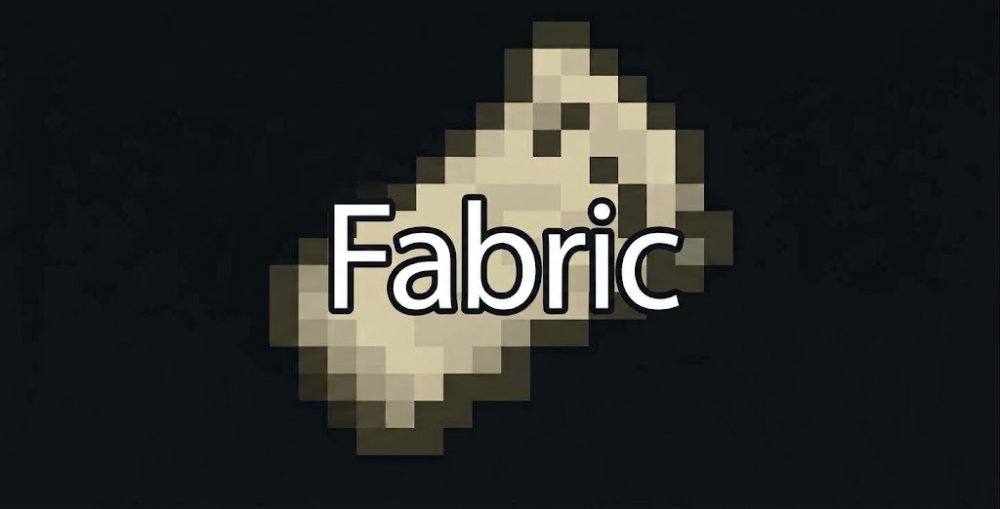

AKTIVES PROFIL
Caeser
Noch kein Profil
Bereit, wenn du es bist.
Deine Profiles.
Deine Versionen. Deine Welten.

DEIN SPIELPROFIL
Zuletzt gespieltNoch nie
Spielzeit insgesamt0 Min.
Speicher im ProfilWird berechnet …
Deine Skins.
Wähle deinen Look oder lade eigene Minecraft-Skins hoch.
Einstellungen
Ein bisschen Feintuning. Ganz nach deinem Geschmack.
SPRACHE
Wähle die Anzeigesprache für den Launcher
Spiel & Start
Spielprotokoll beim Start
Öffnet beim Starten von Minecraft automatisch ein separates Log-Fenster, das du frei verschieben kannst.
Discord Rich Presence
Zeigt deinen aktuellen Spielstatus und die Spielzeit live in Discord an.
Java & Dateien
Java-Laufzeit
Automatisch verwaltet
Spielverzeichnis
Deine Profile, Welten und Mods.
Über Caeser Client
Version0.3.21
PlattformWindows 64-Bit
Mod-LoaderFabric & Vanilla
DownloadsModrinth & CurseForge
Unabhängiger Launcher für Minecraft Java Edition. Nicht verbunden mit Mojang oder Microsoft.
Farbschemata & Themes
Eigene Akzentfarbe
Freie Farbauswahl
Wähle einen ganz eigenen Ton für die gesamte Launcher-Oberfläche.
Hintergrund & Effekte
Hintergrund-Atmosphäre
Wähle den Stil des Launcher-Hintergrunds.
Ambient-Animation
Sanftes Licht auf deiner Startseite.
Glow-Leuchten
Intensität des Neon-Leuchtens an Akzenten.
Eigenes Wallpaper & Animation
Kein eigenes Wallpaper aktiv
Hintergrund-Deckkraft
Transparenz des eigenen Hintergrunds (10% bis 100%)
Hintergrund-Unschärfe (Blur)
Weichzeichnung des Hintergrunds für maximale Lesbarkeit